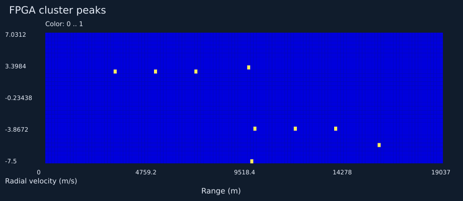
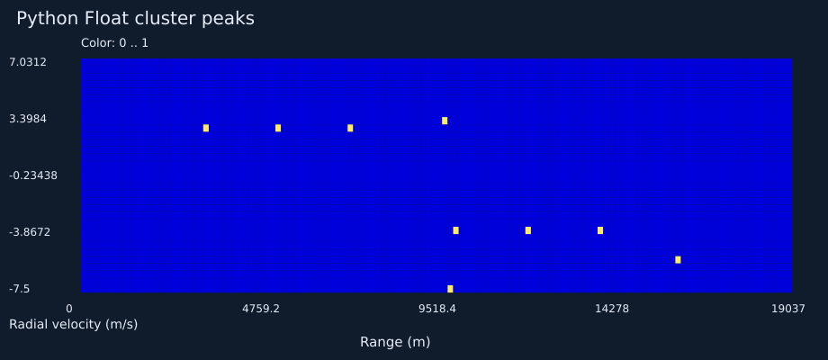
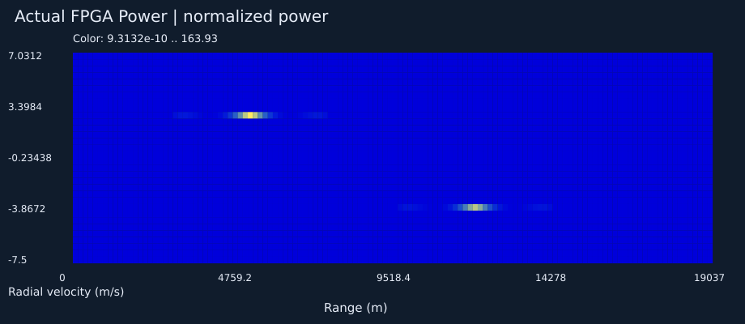

ورودی بایتبهبایت کنترل شد؛ COMMIT دریافت و CPI آزاد شد. معیار تطبیق یکبهیک: ±2 سلول برد و ±1 بین داپلر.
| منبع | هدف تطبیقیافته | هدف تعریفشده | کلاستر بدون تطبیق |
|---|---|---|---|
| FPGA | 0 | 0 | 9 |
| Python Float | 0 | 0 | 9 |
| Python Fixed | 0 | 0 | 9 |

| شناسه | برد m | سرعت m/s | سلولهای کلاستر |
|---|---|---|---|
| 0 | 3297.72 | 2.8125 | 4 |
| 1 | 5246.37 | 2.8125 | 5 |
| 2 | 7195.02 | 2.8125 | 4 |
| 3 | 9743.25 | 3.28125 | 1 |
| 4 | 9893.15 | -7.5 | 2 |
| 5 | 10043 | -3.75 | 4 |
| 6 | 11991.7 | -3.75 | 5 |
| 7 | 13940.3 | -3.75 | 4 |
| 8 | 16038.9 | -5.625 | 2 |

| شناسه | برد m | سرعت m/s | سلولهای کلاستر |
|---|---|---|---|
| 0 | 3297.72 | 2.8125 | 4 |
| 1 | 5246.37 | 2.8125 | 5 |
| 2 | 7195.02 | 2.8125 | 4 |
| 3 | 9743.25 | 3.28125 | 1 |
| 4 | 9893.15 | -7.5 | 2 |
| 5 | 10043 | -3.75 | 4 |
| 6 | 11991.7 | -3.75 | 5 |
| 7 | 13940.3 | -3.75 | 4 |
| 8 | 16038.9 | -5.625 | 2 |
| شناسه | برد m | سرعت m/s | سلولهای کلاستر |
|---|---|---|---|
| 0 | 3297.72 | 2.8125 | 4 |
| 1 | 5246.37 | 2.8125 | 5 |
| 2 | 7195.02 | 2.8125 | 4 |
| 3 | 9743.25 | 3.28125 | 1 |
| 4 | 9893.15 | -7.5 | 2 |
| 5 | 10043 | -3.75 | 4 |
| 6 | 11991.7 | -3.75 | 5 |
| 7 | 13940.3 | -3.75 | 4 |
| 8 | 16038.9 | -5.625 | 2 |

| مرجع | معیار | نتیجه |
|---|---|---|
| Python Float | hardware_clusters | 9 |
| Python Float | reference_clusters | 9 |
| Python Float | compared_fields | ['record_id', 'range_bin', 'doppler_bin', 'signed_doppler_bin', 'cluster_cells'] |
| Python Float | common_peak_coordinates | 9 |
| Python Float | hardware_only_peaks | [] |
| Python Float | reference_only_peaks | [] |
| Python Float | record_signatures_exact | 1 |
| Python Fixed | hardware_clusters | 9 |
| Python Fixed | reference_clusters | 9 |
| Python Fixed | compared_fields | ['record_id', 'range_bin', 'doppler_bin', 'signed_doppler_bin', 'cluster_cells', 'power_stored_integer', 'tie_flag', 'max_equal_power_cells'] |
| Python Fixed | common_peak_coordinates | 9 |
| Python Fixed | hardware_only_peaks | [] |
| Python Fixed | reference_only_peaks | [] |
| Python Fixed | record_signatures_exact | 1 |
این اجرای سناریو، برآورد آماری Pd/Pfa نیست. فایل ورودی بدون مشخصات حقیقت هدف، فقط برای مقایسه FPGA و مراجع قابل استفاده است.